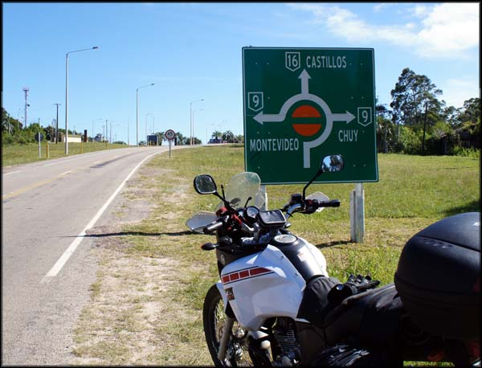
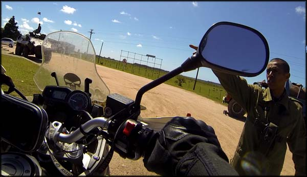
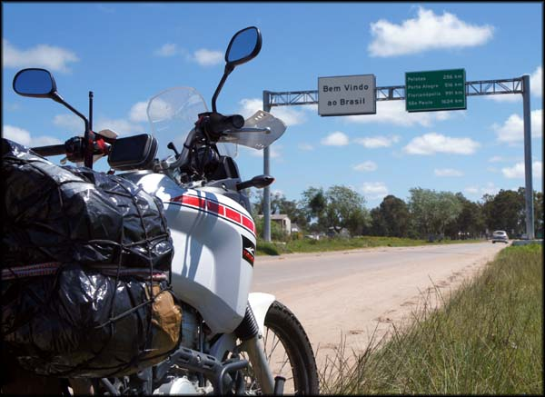
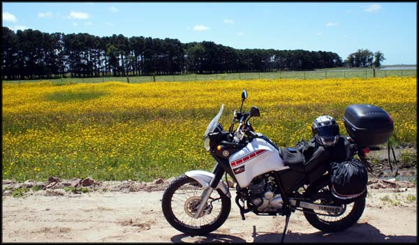
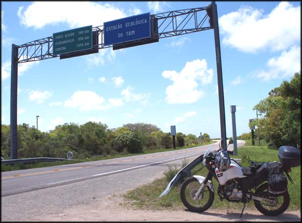
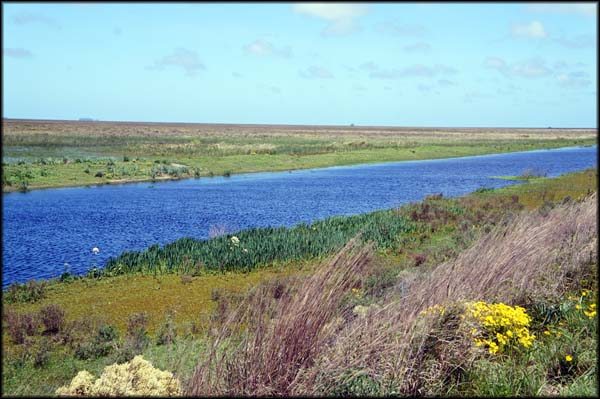
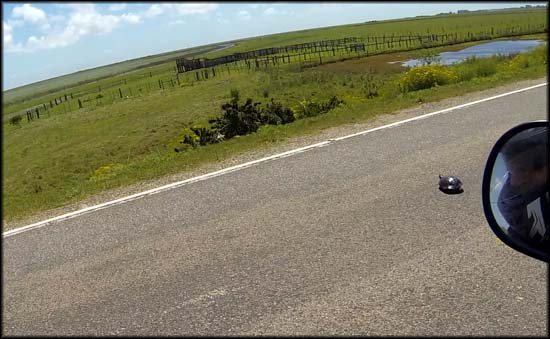

Acordei de novo no Terrazas de Aguas Dulces, e desci para o café da manhã. Encontrei o Sr. Miguel, o proprietário, e perguntei se poderia lhe pagar a segunda diária no cartão de crédito. Podia, ele pegou a máquina, mas viu que estava sem bobina e disse que não conseguiria fazer a operação. Eu não tinha o suficiente em moedas uruguaias, e perguntei quanto ficaria se pagasse em reais. R$ 70,00.
Mais barato do que a noite anterior, que paguei em pesos, com o câmbio que tinha feito. Deveria sempre ter perguntado se aceitavam reais em outros lugares. Até já tinha lido essa dica, mas esqueci de aplicá-la. Fica o aprendizado agora e a dica pra quem está iniciando uma viagem pela América do Sul.
De volta à Ruta 9, partindo pro Chuí
Depois do café subi para o quarto, me arrumei, amarrei as bagagens na moto, e voltei à estrada. De novo peguei a Ruta 9, e segui direto para a fronteira com o Brasil, no Chuy. Passei em frente à Fortaleza de Santa Teresa, segui viagem, e cheguei na Aduana uruguaia.
Na fronteira Uruguai x Brasil, parei para comunicar a saída
Perguntei a um soldado do exército que lá estava onde eu poderia parar a moto para ir comunicar a saída do país. Ele me apontou um recuo na rodovia, estacionei a moto, e atravessei a pista a pé para fazer os trâmites de imigração.
Bem diferente da Aduana em Rivera, esta estava cheia de militares, que faziam buscas nos carros que entravam, inclusive com a ajuda de cães farejadores. Tinha até tanque de guerra no local, e um acampamento militar com barracas ao lado da pista.
Entrei na pequena construção da Aduana, e depois que eu disse o que queria, uma senhorinha pegou meu passaporte, bateu lá o carimbo quase sem tinta de saída do país. Disse que quanto à moto, nada precisaria ser feito, e que eu já podia ir. Que doidera, bem à culhão mesmo.
Fronteira com Uruguai, entrada no Brasil
Voltei à moto, e segui viagem. Cheguei na parte onde efetivamente começa o território brasileiro. E infelizmente me despedi daquele asfalto lisinho e bem cuidado do Uruguai. Já em frente ao prédio da Receita Federal, uma obra espalhava barro no meio da pista, cones, uma confusão danada, demorei a entender para onde eu deveria ir com a pista interditada.
Parei no prédio da Receita para perguntar onde era a Polícia Federal. Era lá mesmo, numa salinha. Fui até a PF, e pedi ao agente que estava de plantão para comunicar meu retorno ao país, bem como da minha moto. Ele disse que não precisava comunicar meu retorno, que eu não precisava fazer nada, sendo brasileiro. E quanto à moto também nada havia a fazer. Insisti um pouco, disse que na Polícia Federal em Santana do Livramento tinham registrado em algum sistema a placa da moto e meu documento, saindo do país; logicamente o contrário deveria ser feito agora. Não precisa, não há nada a fazer, alegou o impaciente agente. Deixei quieto, e agradeci, “então tá, obrigado”.
Voltei pra moto e passou por mim um grupo grande, com motos maiores, Harleys, BMWs, uma galera. Falei rapidamente com um dos caras e lhes desejei boa viagem.
Não sabia mesmo como voltar à estrada, e perguntei pros peões da obra por onde eu deveria passar para continuar entrando no Brasil. Me indicaram, era pra seguir bem pelo meio daquela obra bagunçada mesmo, desviando de trator, escavadeira e montinhos de terra e cimento. Que zona!
Fui seguindo, agora já na RS-471, com radares de fiscalização de velocidade a cada dez centímetros. Ri sozinho da cultura brasileira (deprimente nesse caso). No Uruguai só passei por uma fiscalização eletrônica de velocidade. Nem bem entrei no Brasil, já havia passado por cinco.
As paisagens à beira da pista eram as mesmas, características dos pampas. Um belo visual, apesar de um tanto quanto monótono depois de algum tempo.
Belas paisagens, a caminho da Reserva do Taim
E assim fui, desviando dos buracos, pulando os quebra-molas. Cheguei em Santa Vitória do Palmar/RS, completei o tanque, e fiquei enrolando um pouco para seguir viagem, já estava cansado. Só não enrolei mais porque o clima ali estava esquisito, uns caras estranhos, e fiquei com medo. Segui.
As condições do asfalto melhoraram um pouco, e foi quando vi a placa que demarcava o início da área de preservação ambiental da Reserva do Taim. Ah, esse lugar eu queria conhecer! Parei a moto, bebi uma água, descansei um pouco. Seriam uns 25km nessa estrada que corta a reserva ecológica, da qual eu muito tinha ouvido falar.
A Reserva do Taim
Entrando na área da Reserva do Taim, um paraíso preservado
Iniciei o trecho, e de fato é uma visão de outro mundo. Capivaras, cavalos, vacas, um sem número de pássaros de diferentes espécies, cisneis… sério, todo mundo que gosta de natureza tinha que conhecer esse lugar. Recomendo fortemente o passeio por essa rodovia. Em alguns momentos, me senti passando por um cenário mágico, muito louco mesmo, os pássaros voando ao lado da moto, como se estivessem me acompanhando… me amarrei.
Reserva do Taim, o cenário é esse, na foto rápida que tirei não se tem noção do quanto é belo
Não se pode parar para tirar fotos ao longo da rodovia que cruza a Reserva Ecológica do Taim. Mas não podia deixar de fazer alguma imagem, e a bateria da GoPro acabou, acabei parando rapidamente no acostamento para substituir.
De repente, passei por um objeto que não reconheci de pronto, mas fiquei olhando pelo retrovisor. Era uma tartaruga, atravessando a pista. Naquele ritmo lento dela. Pensei que estaria fazendo uma boa ação, e dei a volta com a moto para sinalizar para outros veículos que passavam, muitos acima da velocidade máxima de 60km/h (o que explica as dezenas de animais mortos à beira da estrada, infelizmente). Só que minha boa intenção quase deu tragédia.
Tartaruga empacou no meio da pista, momentos de tensão
A tartaruga, não sei se por causa do barulho do motor ou se mesmo por minha aproximação, ficou com medo e parou, se encolhendo dentro do casco, igual nos desenhos animados. Putz! Empacou bem no meio da pista, e por minha culpa! Fiz sinal pra um caminhão que eu observava pelo retrovisor, ele desviou pela pista contrária. Voltei com a moto para meu destino, e fui embora devagar. Quando já tinha me afastado mais, pude ver que a tartaruga, malandra, havia retomado sua andança, e já quase terminava a travessia da pista. Ufa! Já não bastasse ficar com peso na consciência por não poder ter feito nada pelo filhote de Leão Marinho em Cabo Polonio, ainda teria que carregar o peso na consciência de ter provocado um atropelamento de tartaruga… que coisa.
Depois de curtir por uns bons quilômetros rodando a 40km/h naquele belo visual, acabou-se a área da reserva. Continuei então pela RS-471 até o Rio Grande/RS. Pensei em ir até onde saem as balsas para atravessar a Lagoa dos Patos, e ver como funcionava, se valia a pena eu fazer aquela travessia, ou se voltava um pouquinho e seguia por Pelotas, pelos caminhos convencionais - e que em nada me atraíam naquele momento.